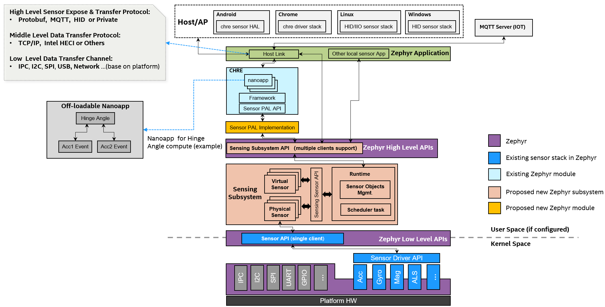
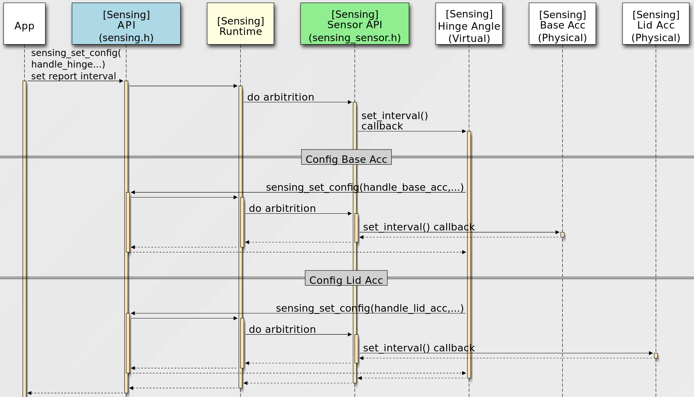
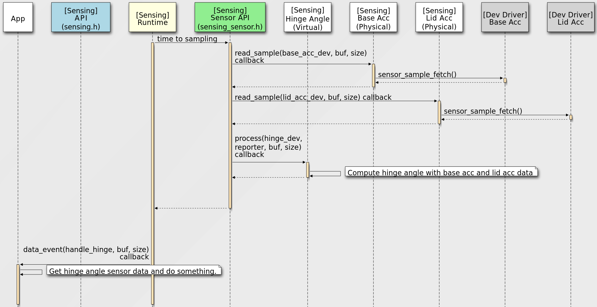
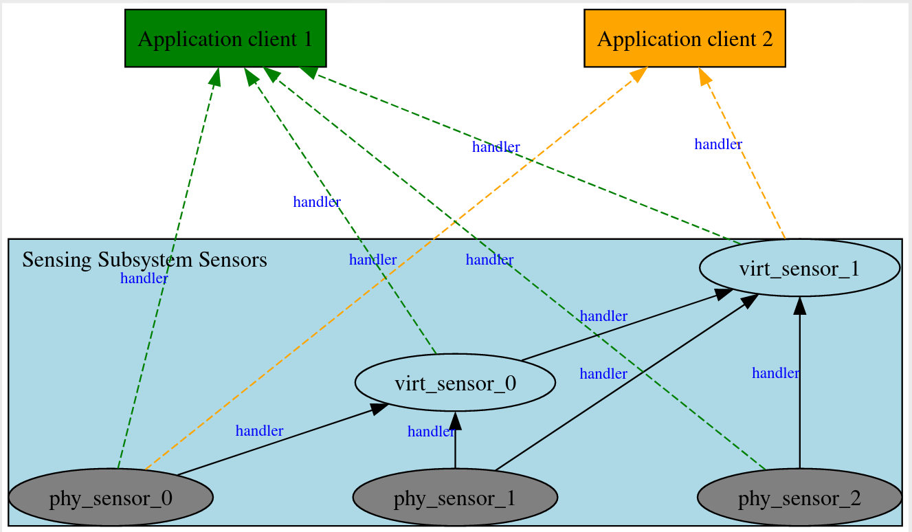

传感子系统（Sensing Subsystem）
概述
传感子系统是位于操作系统用户空间服务层中的高层传感器框架，侧重于传感器融合、客户端仲裁、采样、定时、调度以及基于传感器的电源管理。
传感子系统的关键概念包括物理传感器和虚拟传感器对象，以及建立在传感器对象关系之上的调度框架。物理传感器的输入不依赖任何其他传感器对象，直接与现有的 Zephyr 传感器设备驱动交互。虚拟传感器则依赖其他传感器对象（物理或虚拟）作为报告输入。
传感子系统依赖 Zephyr 传感器设备 API（现有版本或将来的更新版本），以利用 Zephyr 庞大的传感器设备驱动库（100 多个）。
传感子系统是可选的。只需访问简单传感器设备的应用程序可以直接使用 Zephyr 传感器 API。
由于传感子系统与设备驱动层或内核空间相分离，它可以借助虚拟传感器的概念，在用户空间支持各种定制和传感器算法。现有的传感器设备驱动可以专注于底层的设备端工作，尽量保持简单，只需提供设备硬件抽象和操作等。这对系统稳定性非常有利。
传感子系统与任何传感器暴露/传输协议解耦，目标是根据不同产品的需求，支持采用不同传感器暴露/传输协议的各种上层框架和应用程序，例如 CHRE、HID 传感器应用程序、MQTT 传感器应用程序。借助其多客户端支持设计，它甚至可以同时支持多个使用不同上层传感器协议的应用程序。
传感子系统有助于构建统一的 Zephyr 传感架构，既可支持跨主机操作系统的场景，也可用于物联网传感器解决方案。
下图展示了传感子系统如何与上层框架集成。

可配置性
可复用、可配置的独立子系统。
基于 Zephyr 现有的底层传感器 API（复用 100 多个现有传感器设备驱动）
为应用程序提供 Zephyr 高层传感子系统 API。
提供单独可选的 CHRE Sensor PAL 实现模块以支持 CHRE。
与任何主机链路协议解耦，由 Zephyr 应用程序负责处理不同的协议（MQTT、HID 或私有协议，均可配置）
主要特性
- 范围
专注于传感器融合、多客户端、仲裁、数据采样、定时管理和调度的框架。
- 传感器抽象
物理传感器：与 Zephyr 传感器设备驱动交互，专注于数据采集。
虚拟传感器：依赖其他传感器（物理 或 虚拟），专注于数据融合。
- 数据驱动模型
轮询模式：周期性采样率
中断模式：数据就绪、阈值中断等。
- 调度
所有传感器对象的采样和处理都在单线程主循环中进行。
- 用于批处理的缓冲模式
- 可通过设备树配置
下图展示了 API 的位置和范围：

Sensing Subsystem API 供应用程序使用，Sensing Sensor API 用于开发 sensors。
主要流程
传感器配置流程

传感器数据流程

传感器类型与实例
Sensing Subsystem 支持同一传感器类型的多个实例，应用程序可以通过两种方法来识别并打开某个唯一的传感器实例：
枚举所有传感器实例
sensing_get_sensors()以sensing_sensor_info指针数组的形式，返回当前开发板配置所支持的全部传感器实例的信息。之后，应用程序可以使用
sensing_open_sensor()打开特定的传感器实例，以便后续访问、配置和接收传感器数据等。此方法适合支持
CHRE、HID等需要动态枚举底层平台传感器实例的上层框架。直接通过设备树节点打开传感器实例
应用程序可以使用
sensing_open_sensor_by_dt()，直接通过传感器的设备树节点标识符打开传感器实例。例如：
sensing_open_sensor_by_dt(DEVICE_DT_GET(DT_NODELABEL(base_accel)), cb_list, handle);
sensing_open_sensor_by_dt(DEVICE_DT_GET(DT_CHOSEN(zephyr_sensing_base_accel)), cb_list, handle);
对于只想访问特定传感器的简单应用程序，此方法实用且易于使用。
Sensor type 遵循 HID 标准传感器类型定义。
传感器实例句柄
客户端使用 sensing_sensor_handle_t 类型的句柄来操作已打开的传感器实例，之后对该传感器实例的所有操作（例如设置配置、读取传感器采样数据等）都需要使用这个句柄。
一个传感器实例可以有两类客户端：Application clients 和 Sensor clients。
Application clients 可以使用 sensing_open_sensor() 打开传感器实例并获取其句柄。
对于 Sensor clients，没有用于打开报告者（reporter）的 open API，因为客户端与报告者之间的关系是在传感器注册阶段根据设备树建立的。
Sensing Subsystem 会自动为客户端传感器打开其报告者传感器并创建 handlers。Sensor clients 可以通过 sensing_sensor_get_reporters() 获取其报告者的句柄。

备注
对于传感子系统内部的传感器，它们之间的报告关系全部由传感子系统根据设备树定义自动生成，客户端传感器与报告者传感器之间的句柄也会自动创建。应用程序需要调用 sensing_open_sensor() 显式打开传感器实例。
传感器采样值
数据结构
每个传感器采样值都定义为公共的
header+readings[]数据结构，例如sensing_sensor_value_3d_q31、sensing_sensor_value_q31和sensing_sensor_value_uint32。header的定义见sensing_sensor_value_header()。时间戳
传感子系统中时间戳的单位是
micro seconds。header定义了一个 base_timestamp，readings[] 数组中的每个元素定义了 timestamp_delta。timestamp_delta 是相对于前一个 readings （或 base_timestamp）的值
例如：
readings[0]的时间戳为header.base_timestamp+readings[0].timestamp_delta。readings[1]的时间戳为timestamp of readings[0]+readings[1].timestamp_delta。
由于时间戳单位是微秒，最大的 timestamp_delta （
uint32_t）为4295秒。如果某个传感器的批量数据中两次连续读数相差超过
4295秒，传感子系统运行时会将它们拆分到多个 readings 结构体实例中，并发送多个事件。这一概念参考自 CHRE Sensor API。
数据格式
Sensing Subsystem为每种传感器类型使用各自定义的数据格式结构体，并支持 include/zephyr/dsp/types.h 中定义的Q Format，以支持zdsp库。例如，
sensing_sensor_value_3d_q31可用于 3D IMU 传感器，如SENSING_SENSOR_TYPE_MOTION_ACCELEROMETER_3D、SENSING_SENSOR_TYPE_MOTION_UNCALIB_ACCELEROMETER_3D和SENSING_SENSOR_TYPE_MOTION_GYROMETER_3D。sensing_sensor_value_uint32可用于SENSING_SENSOR_TYPE_LIGHT_AMBIENTLIGHT传感器，sensing_sensor_value_q31可用于SENSING_SENSOR_TYPE_MOTION_HINGE_ANGLE传感器
设备树配置
传感子系统使用设备树配置所有传感器实例及其属性和报告关系。
参见示例 samples/subsys/sensing/simple/boards/native_sim.overlay
API 参考
- sensing_api